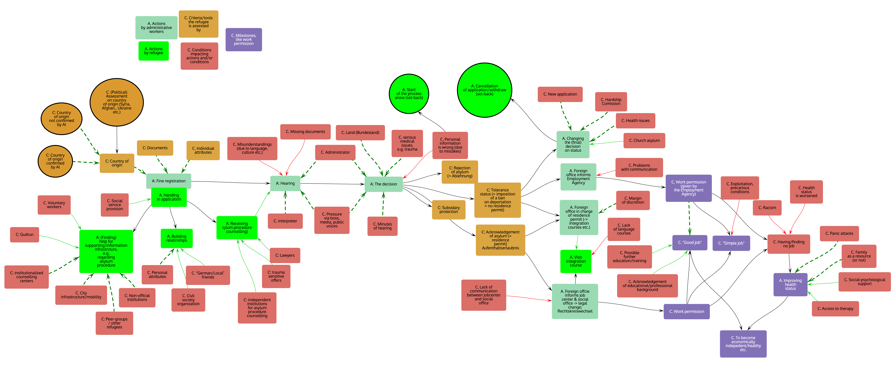
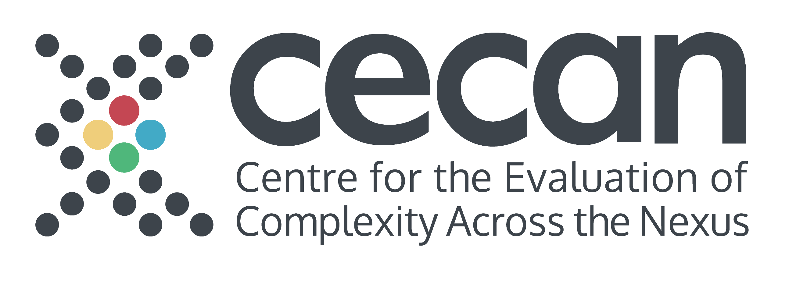
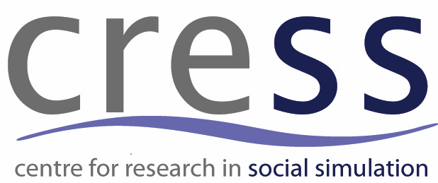

Participatory System Mapper (PRSM)
A free, secure, and open-source platform for mapping complex systems. Built for researchers, policy-makers, and facilitators to collaborate in real-time.
Visualising Complexity
From social integration to environmental policy, PRSM handles hundreds of interconnected variables with ease.

Example: Policy System Map showing causal links and stakeholder clusters.
Facilitate Workshops
Invite stakeholders to add nodes and links simultaneously. Perfect for Zoom/Teams breakouts or face-to-face sessions on tablets.
Groups of people, each using their own computer (or tablet) can collaborate in the drawing of a map using PRSM. They may be sitting around a table, discussing the map as it is created face to face, or working remotely, using PRSM and video conferencing.
Everyone can participate because every edit (creating nodes and links, arranging them, annotating them, and so on) is broadcast to all the other participants as the changes are made.
Work securely
Designed, shaped and coded by experts with an emphasis on security and ease of use
PRSM is secure — the only way to gain access to a map is if you have the web address of the shared ‘room’, a random string of 12 letters.
PRSM is GDPR compliant: for details see our privacy notice .
Encoded data is transmitted between users using a server located in Ireland, and so does not leave the jurisdiction of the GDPR. You can also install the server on your local intranet if you wish.
Map any network
The network or map can be anything that has items (or 'factors' or 'nodes') connected by links (or 'edges').
- People (the nodes) connected by knowing each other (e.g. a stakeholder map)
- Factors or variables causing (the links) changes in other factors (e.g. a causal loop diagram)
- Theories expressed as variables and relationships between them (e.g. a Theory of Change)
- Company boards of directors (the nodes) and the directors that sit on more than one board (the links) (e.g. interlocking directorates )
- Twitter hashtags (the nodes) included together on posts (the links) (a hashtag network)
- Scientists (the nodes) co-authoring or co-citing papers (the links) (e.g. a co-citation network)
AI Assistance
Get AI-generated suggestions to annotate nodes and links, provide explanations of complex relationships, and generate summaries of the whole map.
Export & Report
Get high-res images for publication, import and export raw data to Excel, GML, and GEXF and other network formats for further analysis, or connect your code through the PRSM API
The PRSM Assistant is an AI-powered chatbot designed to help users navigate and utilize the features of the Participatory System Mapper (PRSM). Whether you're new to PRSM or looking for advanced tips, the assistant can provide guidance on how to create maps, use specific tools, and make the most of your mapping experience. However, please note that the assistant is not perfect and may not always provide accurate or complete information.
Our Story
The Centre for the Evaluation of Complexity Across the Nexus (CECAN) was founded in 2016 as an ESRC research centre, with the aim of 'transforming the practice of policy evaluation across the food, energy, water and environmental domains to make it fit for a complex world'. Since then, CECAN has worked closely with UK government departments and others and has developed a methodology for creating participatory system maps. These maps were thought to be very helpful to those who worked on them — policymakers, policy analysts, and stakeholders in public policy — but it was laborious to digitise the paper and Post-It™ notes that were used in mapping sessions. We therefore began investigating the possibility of asking participants to use mapping software.
Shortly afterwards (early 2020), the COVID-19 pandemic meant that the kind of face-to-face mapping workshops we had been organising were no longer feasible. Over the course of 2020, we developed PRSM and somewhat hesitantly tried it out with some pilot workshops. Gradually, the reliability and capability of PRSM improved, and we learned how to run system mapping workshops online, which requires somewhat different strategies than face-face workshops. The core of PRSM is now stable and well tested, but it continues to be extended to add further features.
Acknowledgements



PRSM was designed and written by
Nigel Gilbert
. To cite PRSM, use:
Gilbert, N. (2026). PRSM: The Participatory System Mapper. https://prsm.uk